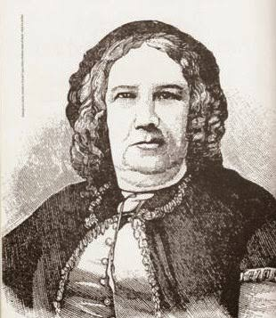

Nísia Floresta Brasileira Augusta (1810–1885) foi uma escritora, educadora e intelectual brasileira que se destacou principalmente pela defesa da educação e dos direitos das mulheres. Nascida no Rio Grande do Norte, viveu em um período em que as mulheres brasileiras tinham poucas oportunidades de acesso ao ensino e à participação na vida intelectual.
Nísia acreditava que a educação era fundamental para o desenvolvimento das pessoas e da sociedade. Ela criticava a ideia de que as mulheres deveriam receber apenas uma formação voltada para as tarefas domésticas e defendia que elas também deveriam estudar diferentes áreas do conhecimento.
Em 1832, publicou Direitos das mulheres e injustiça dos homens, uma de suas obras mais conhecidas. Nela, discutiu a posição das mulheres na sociedade e defendeu maior acesso feminino à educação e ao conhecimento.
Sua atuação não ficou apenas nos textos. Em 1838, fundou, no Rio de Janeiro, o Colégio Augusto, dedicado à educação de meninas. A escola oferecia uma formação considerada avançada para a época, ampliando os conteúdos disponíveis às estudantes.
Além da educação feminina, Nísia escreveu sobre temas relacionados à sociedade, à política e à cultura. Ao longo de sua vida, também teve contato com ideias e movimentos intelectuais europeus, ampliando sua participação nos debates sobre educação e direitos.
A importância de Nísia Floresta para a história da educação brasileira está principalmente em sua defesa de que o conhecimento deveria ser mais acessível às mulheres. Seu trabalho ajudou a questionar padrões sociais de sua época e tornou-se uma referência histórica na luta pela educação e pelos direitos femininos no Brasil.
Dentro do tema "Educação também é ciência", Nísia representa a importância de ampliar o acesso ao conhecimento. Seu trabalho mostra que uma sociedade que deseja desenvolver a ciência e a educação precisa oferecer oportunidades para que diferentes pessoas possam estudar, aprender e participar da construção do conhecimento.